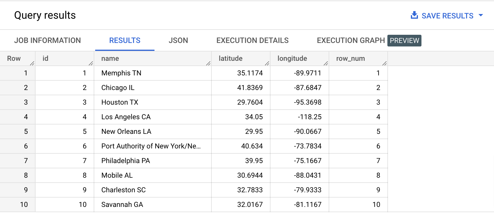
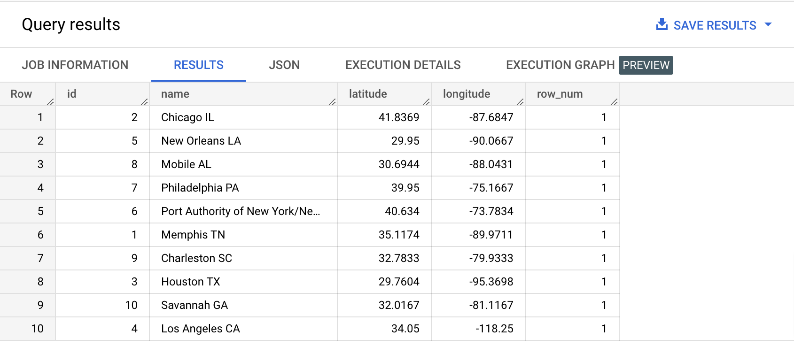
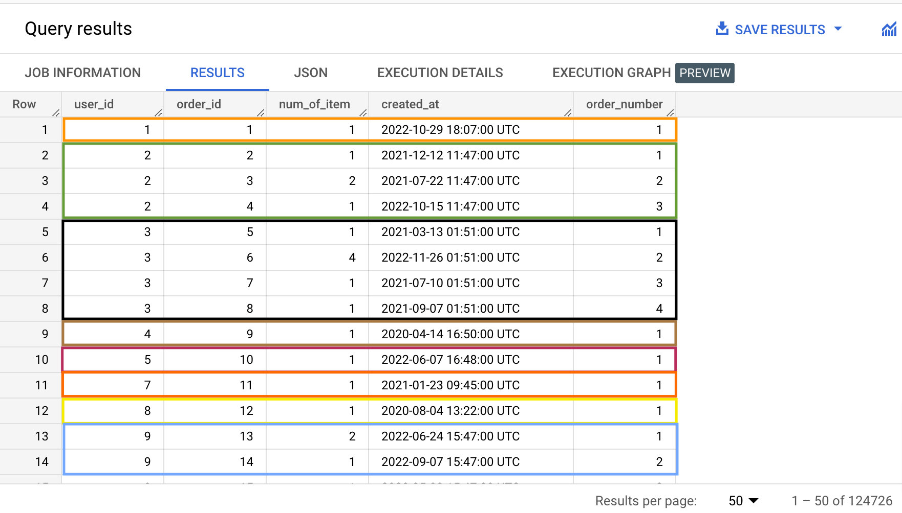
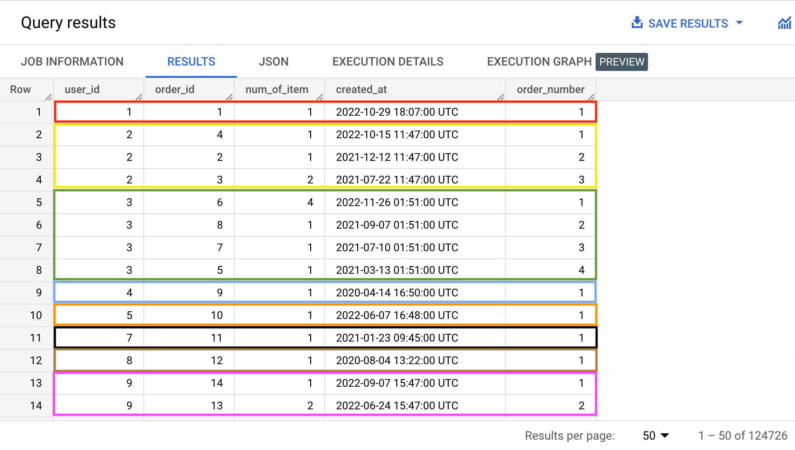
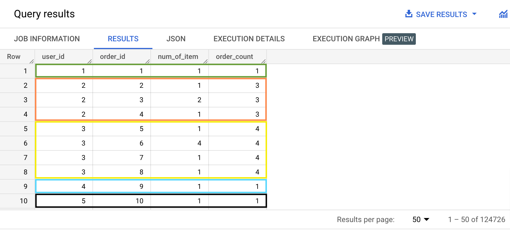
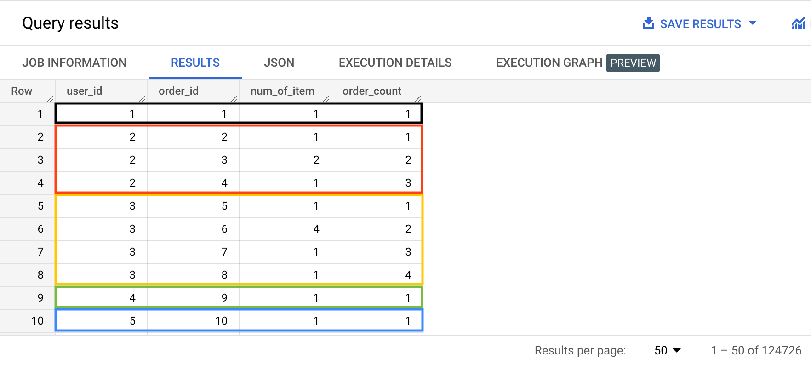
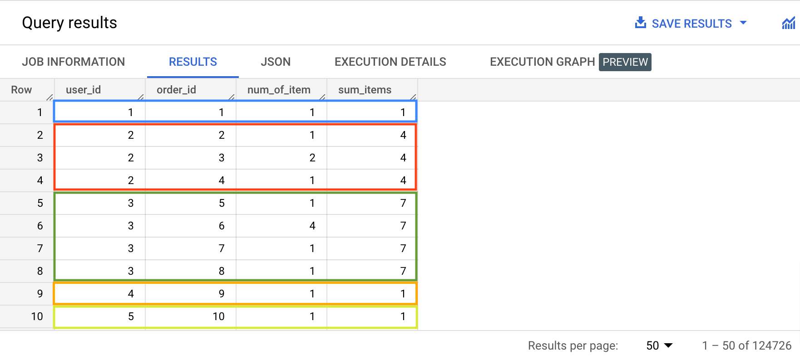
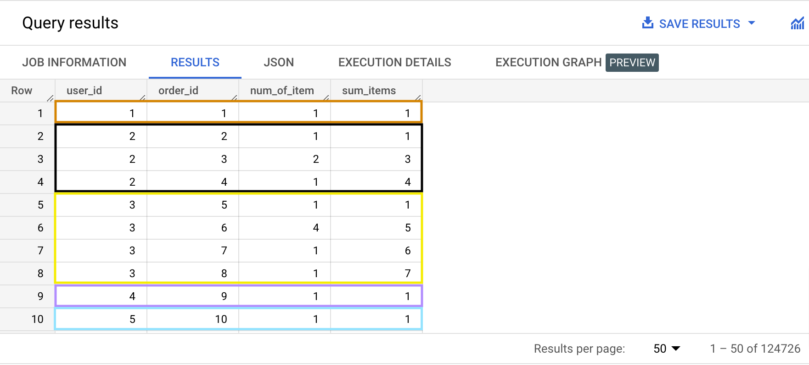
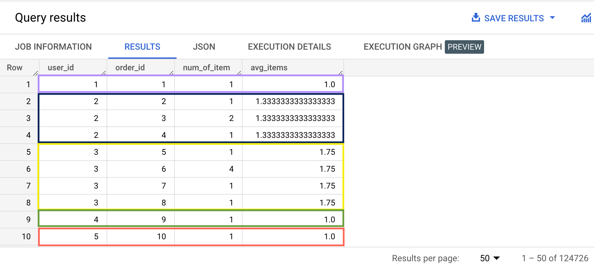

Window functions are functions that:
They are very useful to compute percentages, subtotals, cumulative or rolling calculations.
Type the query below in the BigQuery console and run it. Don't copy paste. üòâ
SELECT *, ROW_NUMBER() OVER () AS row_num
FROM bigquery-public-data.thelook_ecommerce.distribution_centers;
Example results:

Notes:
ROW_NUMBER() ⇒ ROW_NUMBER is the actual window function, called here without parameters. ROW_NUMBER is a function that returns the index of the current row in the group of rows (window) that‚Äôs used as input.OVER() ⇒ is a special clause that must follow any call to a window function. This is where we define the group of rows (or windows) to use as input for the window function. When OVER() is called without parameters, then the window that‚Äôs used is the entire column.Type the query below in the BigQuery console and run it. Don't copy paste. üòâ
SELECT *, ROW_NUMBER() OVER (PARTITION BY name) AS row_num
FROM bigquery-public-data.thelook_ecommerce.distribution_centers;
Example results:

Notes:
OVER(PARTITION BY id) ⇒ here we define a specific window to use for each row. In this example, a window is the group of rows that have the same name as the current row.Type the query below in the BigQuery console and run it. Don't copy paste. üòâ
SELECT user_id,
order_id,
created_at,
num_of_item,
ROW_NUMBER() OVER (PARTITION BY user_id) AS order_number
FROM bigquery-public-data.thelook_ecommerce.orders;
Notes:
OVER(PARTITION BY user_id) ⇒ here we define a specific window to use for each row. In this example, the window is the group of rows that have the same user_id as the current row.Type the query below in the BigQuery console and run it. Don't copy paste. üòâ
SELECT user_id,
order_id,
created_at,
ROW_NUMBER() OVER (PARTITION BY user_id) AS order_number
FROM bigquery-public-data.thelook_ecommerce.orders
ORDER BY user_id;
Notes:
ORDER BY clause, after the FROM clause, we can order the result (here by user_id) and see the totality of our windows.Type the query below in the BigQuery console and run it. Don't copy paste. üòâ
SELECT user_id,
order_id,
num_of_item,
created_at,
ROW_NUMBER() OVER (PARTITION BY user_id ORDER BY order_id ASC) AS order_number
FROM bigquery-public-data.thelook_ecommerce.orders
ORDER BY user_id;
Example results:

Notes:
OVER (PARTITION BY user_id ORDER BY order_id ASC) ⇒ by using the ORDER BY clause inside the OVER clause, we can sort each of our windows in the order we want. Here we are sorting by order_id.
Type the query below in the BigQuery console and run it. Don't copy paste. üòâ
SELECT user_id,
order_id,
num_of_item,
created_at,
ROW_NUMBER() OVER (PARTITION BY user_id ORDER BY created_at DESC) AS order_number
FROM bigquery-public-data.thelook_ecommerce.orders
ORDER BY user_id;
Example results:

Notes:
OVER (PARTITION BY user_id ORDER BY created_at DESC) ⇒ by using the ORDER BY clause inside the OVER clause, we can sort each of our windows in the order we want. Here we are sorting by created_at.
We can use any of the usual aggregate functions as window functions: COUNT, SUM, AVG, MAX, MIN etc.
Type the query below in the BigQuery console and run it. Don't copy paste. üòâ
SELECT user_id,
order_id,
num_of_item,
COUNT(*) OVER (PARTITION BY user_id) AS order_count
FROM bigquery-public-data.thelook_ecommerce.orders
ORDER BY user_id;
Example results:

Note that in this example, since we are using an aggregate function, the calculated value (order_count) is the same among each window's rows.
In addition to sort the rows inside each window, using the ORDER BY clause in the OVER() function will cause a cumulative calculation for each row. The calculated value will then be different for every rows of each window. Compare this example with the previous one.
Type the query below in the BigQuery console and run it. Don't copy paste. üòâ
SELECT user_id,
order_id,
num_of_item,
COUNT(*) OVER (PARTITION BY user_id ORDER BY order_id ASC) AS order_count
FROM bigquery-public-data.thelook_ecommerce.orders
ORDER BY user_id;
Example results:

üëଆHow do cumulative aggregations work behind the hood?
Inside each window is a series of rows called window frames. Some window functions consider only window frame rows, not the entire set of rows in a window. SUM is such a function.
By default, the window frame has all rows of the window. Things change when theOVERclause has anORDER BYstatement. It narrows the window frame to the rows from the start of the window to the current row + all subsequent rows with the sameORDER BYvalue.
Using SUM as a window function (non cumulative example):
Type the query below in the BigQuery console and run it. Don't copy paste. üòâ
SELECT user_id,
order_id,
num_of_item,
SUM(num_of_item) OVER (PARTITION BY user_id) AS sum_items
FROM bigquery-public-data.thelook_ecommerce.orders
ORDER BY user_id;
Example results:

Using SUM as a window function (cumulative aggregation example):
Type the query below in the BigQuery console and run it. Don't copy paste. üòâ
SELECT user_id,
order_id,
num_of_item,
SUM(num_of_item) OVER (PARTITION BY user_id ORDER BY order_id ASC) AS sum_items
FROM bigquery-public-data.thelook_ecommerce.orders
ORDER BY user_id;
Example results:

Using AVG as a window function (non cumulative example):
Type the query below in the BigQuery console and run it. Don't copy paste. üòâ
SELECT user_id,
order_id,
num_of_item,
AVG(num_of_item) OVER (PARTITION BY user_id) AS avg_items
FROM bigquery-public-data.thelook_ecommerce.orders
ORDER BY user_id;
Example results:

Using AVG as a window function (cumulative aggregation example):
Type the query below in the BigQuery console and run it. Don't copy paste. üòâ
SELECT user_id,
order_id,
num_of_item,
AVG(num_of_item) OVER (PARTITION BY user_id ORDER BY order_id ASC) AS avg_items
FROM bigquery-public-data.thelook_ecommerce.orders
ORDER BY user_id;
Example results:

bigquery-public-data.thelook_ecommerce.products
Display the name of the product category with the most products, along with this number.
| category | product_count |
|---|---|
| Intimates | 2363 |
SELECT category,
COUNT(*) OVER(PARTITION BY category) AS product_count
FROM bigquery-public-data.thelook_ecommerce.products
ORDER BY product_count DESC
LIMIT 1;
bigquery-public-data.thelook_ecommerce.products

WITH subquery AS
( SELECT category,
ROUND(AVG(retail_price) OVER(PARTITION BY category), 2) AS avg_retail_price
FROM bigquery-public-data.thelook_ecommerce.products
)
SELECT category,
MAX(avg_retail_price) AS avg_retail_price
FROM subquery
GROUP BY category
ORDER BY avg_retail_price DESC;
bigquery-public-data.thelook_ecommerce.users

WITH subquery AS
( SELECT country,
MIN(age) OVER(PARTITION BY country) AS min_age,
MAX(age) OVER (PARTITION BY country) AS max_age
FROM bigquery-public-data.thelook_ecommerce.users
WHERE FORMAT_DATE('%Y', created_at) = '2022'
)
SELECT country,
MIN(min_age) AS min_age,
MAX(max_age) AS max_age
FROM subquery
GROUP BY country
ORDER BY country ASC;
bigquery-public-data.thelook_ecommerce.products
bigquery-public-data.thelook_ecommerce.order_items
Write a query that will:
NULL
WITH products_and_order_items AS
( SELECT products.id,
category,
name
FROM bigquery-public-data.thelook_ecommerce.products products
INNER JOIN bigquery-public-data.thelook_ecommerce.order_items order_items
ON products.id = order_items.product_id
),
individual_product_sales AS
( SELECT id,
name,
COUNT(*) AS sales,
category
FROM products_and_order_items
GROUP BY id,
name,
category
),
category_avg_sales AS
( SELECT category,
AVG(sales) OVER (PARTITION BY category) AS category_avg_sales
FROM individual_product_sales
)
SELECT id,
name,
sales,
i.category,
ROUND(category_avg_sales, 2) AS category_avg_sales,
CONCAT(ROUND(((sales - category_avg_sales) / category_avg_sales) * 100, 2), '%') AS product_vs_category_comparison_percentage
FROM individual_product_sales i
INNER JOIN category_avg_sales c
ON i.category = c.category
WHERE name IS NOT NULL
ORDER BY RAND();
bigquery-public-data.thelook_ecommerce.products
bigquery-public-data.thelook_ecommerce.order_items

WITH total_revenue AS
( SELECT SUM(sale_price) AS revenue
FROM bigquery-public-data.thelook_ecommerce.order_items
WHERE FORMAT_DATE('%Y', created_at) = '2022'
),
product_category_revenue AS
( SELECT p.id, category, sale_price, o.created_at
FROM bigquery-public-data.thelook_ecommerce.products AS p
INNER JOIN bigquery-public-data.thelook_ecommerce.order_items AS o
ON p.id = o.product_id
WHERE FORMAT_DATE('%Y', created_at) = '2022'
),
category_revenue AS
( SELECT category,
SUM(sale_price) OVER(PARTITION BY category) AS revenue
FROM product_category_revenue
)
SELECT category,
ROUND(MAX(revenue), 2) AS category_revenue,
ROUND((SELECT revenue FROM total_revenue), 2) AS total_revenue,
ROUND((MAX(revenue) / (SELECT revenue FROM total_revenue) * 100), 2) AS category_percentage
FROM category_revenue
GROUP BY category
ORDER BY category_percentage DESC;
bigquery-public-data.thelook_ecommerce.order_items

WITH user_selection_orders AS
( SELECT created_at, order_id
FROM bigquery-public-data.thelook_ecommerce.orders
WHERE user_id IN (49, 52, 53, 80, 81)
)
SELECT CAST(created_at AS DATE) AS order_date,
COUNT(order_id) OVER(ORDER BY CAST(created_at AS DATE) ASC) AS cumulative_orders
FROM user_selection_orders;
bigquery-public-data.thelook_ecommerce.order_items

WITH user_selection_orders_items AS
( SELECT created_at, sale_price
FROM bigquery-public-data.thelook_ecommerce.order_items
WHERE user_id IN (49, 52, 53, 80, 81)
),
raw_cumulative_spend AS
( SELECT CAST(created_at AS DATE) AS date_of_spend,
SUM(sale_price) OVER(ORDER BY CAST(created_at AS DATE) ASC) AS cumulative_spend
FROM user_selection_orders_items
)
SELECT date_of_spend,
ROUND(cumulative_spend, 2) AS cumulative_spend
FROM raw_cumulative_spend;